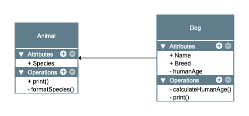

# Note: this example is a mock up: it will not work if you try to run it. It only
# serves as a guide to showcase the components of functional OOP
# create an object of class "myObject"
myObject <- object(list(a=5,
b="hello"),
class="myObject")
# define a generic to print it. This generic takes
# our object and dispathc the print call to the appropriate method
# based on the class of myObject
print <- funciton(obj){
useMethod(obj)
}
# now we define the exact method to print our object. The method is not
# encapsulated into the function definition, it belongs to the generic
# function print(). This is funcitonal OOP
print.myObject <- function(obj){
cat(rep(obj$b, obj$a))
}
# use the print method
print(myObject)
Topics in part 1
. What is object oriented (OO)? How does R implement OO? * Case study. * S3 objects. * S4 objects
What is object oriented programming?
Object oriented (OO) is one of the three main paradigms in programming. It has revolutionized programming, along with structured programming and functional programming. OO is very popular, particularly with languages such as Python, Java, C#, and many more. But what is object oriented programming? OO is often defined by features like encapsulation, polymorphism, and inheritance. I prefer to use the definition from R.C. Martin:
OO languages have absolute control over the direction of all source code. In other words, OO can control dependencies in a very exact manner.
How can we harness that power in R?
OOP in R
R is a functional language by design. You decompose a problem and solve it with functions, rather than with objects. Yet, R supports OO. In fact, in R you use objects and methods all the time, even if you do not realize it. Entities such as data.frame, list, and vectors are classes. And they all have their methods such as print or summary. Those methods behave differently depending on the class you use them on.
R supports two types of OO programming: functional OOP and encapsulated OOP.
Functional OO programming
In functional OO programming, methods belong to generic functions. Functional OO programming resembles standard functional programming, at least from the outside. Functional objects in R are S3 and S4 objects.
Encapsulated OO programming
In encapsulated OO programming, methods belong to classes: they are encapsulated. If you are familiar with Python or Java OO programming, this is the same principle. Encapsulated objects in R are R6 and RC objects.
# Note: this example is a mock up: it will not work if you try to run it. It only
# serves as a guide to showcase the components of encapsulated OOP
# create an object. Note how the print method is defined inside the class: it is encapsulated
# in the class
myObject <- newObject(fields=list(a=5,
b="hello"),
methods=list(print = function(self){
cat(rep(self$a, self$b))}))
# use the print method
myObject$print()In this mini-series we will first look at R’s implementation of OO, and at the pros and cons of different solutions.
The example
In this series we will use a common example for all the objects we will explore. We will define a class Animals with some attributes and methods. We will then define a subclass of Animals: Dog. We will use Dog to show inheritance.
Some attributes and operations should be public (+), while others should be private (-).

As always, I want to give you the knowledge you need to design solutions based on good decisions. I do not aim to give you every possible single detail of the OO implementation. If you want to know all the details, Hadley Wickham has an excellent book: Advanced R.
S3
S3 is the simplest and most common form of OO programming in R. Its implementation is quite relaxed, especially when compared to traditional OO languages. Yet, it is very versatile, and there is merit to its simplified approach.
To understand what I mean, let’s start to work on our example class: Animals.
# Define the class "Animals"
animals <- list(species = "Canis familiaris")
class(animals) <- "Animals"
# default print
animals$species
[1] "Canis familiaris"
attr(,"class")
[1] "Animals"This is very informal. We created a list and changed its class attribute from list to Animals.
In general, whenever we create an S3 object we want to create three functions:
- An internal constructor. This creates the list and changes the class to Animals. This is not exposed to the user. It is a developer function. The constructor name should start with new_.
- A validator to validate the inputs a user provides to create a class.
- A user-friendly class builder exported to the user. A user will call this to build an object. The builder will call the validator and the internal constructor.
This is how we can write the three functions for our class.
# define the internal constructor
new_Animals <- function(obj){
# obj must be a string
animals <- list(species = obj)
class(animals) <- "Animals"
return(animals)
}
# define a validator
validate_Animals <- function(animals){
# obj is the character string that the user will pass to create an object.
# It must of length 1 and not NA. Note that we already validate that the
if(class(animals) != "Animals"){
stop("The object is not of class 'Animals'")
}
if (is.null(attr(animals, "names"))){
stop('Missing class attribute "names"')
}
if (attr(animals, "names") != "species"){
stop('Missing class attribute "species"')
}
if (!is.character(animals$species)){
stop("species must be a character")
}
if (is.na(animals$species)){
stop("species cannot be NA")
}
if (!stringr::str_detect(animals$species, '[a-z, A-Z] [a-z,A-Z]')){
stop("species must contain genus and species separated by a single space.")
}
return(TRUE)
}
# user exposed constructor. In roxygen, we use the @export tag
# for this function
Animals <- function(species = "Undefined Animal"){
animals <- new_Animals(species)
validate_Animals(animals)
return(animals)
}
# use the constructor
# passing a wrong input
tryCatch({
res <- Animals('hello')
},
error = function(msg){msg})<simpleError in validate_Animals(animals): species must contain genus and species separated by a single space.># passing a correct input
res <- Animals('Canis Familiaris')
print(res)$species
[1] "Canis Familiaris"
attr(,"class")
[1] "Animals"Let’s unpack.
new_Animals is the internal constructor. This is not exposed to the user, but it is a quick way to build an object internally, i.e. from within a package.
validate_Animals is the object validator. It checks that we have an object of the right class and with the right attributes. Note that you could include these simple checks in the internal constructor. As a rule of thumb, include expensive checks in the validator and cheap checks in the internal constructor. In this way you can run expensive checks only when needed. However, I prefer a stricter segregation of responsibilities. I put all my checks in the validator, not in the constructor.
Animals is the builder exposed to the user. This function builds the object and then it validates it.
Generics and methods
We now need to create our two methods: print and formatSpecies. print will print a user friendly summary of our object, rather than the one we get by default. formatSpecies will format the species string.
In S3 we cannot create private methods. All our methods will be public.
Let’s start from the print method. A generic print already exists in R. You can call it on any variable to see its value printed to the console. In fact, print is an S3 generic. We can use it and create a new method for the class Animals.
# s3 print method for the class Animals
print.Animals <- function(obj){
cat(paste0("Object of class 'Animals'. The species is ",
obj$species))
}
# create a new object
newAnimal <- Animals('Canis Familiaris')
print(newAnimal)Object of class 'Animals'. The species is Canis FamiliarisNote how the output of print is now different from the code snippet we used above, where the method was not defined yet.
A very important thing to keep in mind is the naming convention for S3 methods. S3 methds must be defined using <generic>.<class>. This is the internal R convention needed to get the dispatch mechanism to work. In our example, we called the method print.Animals
Let’s now create formatSpecies. This method does not have a generic, so we need to create it.
# the generic
formatSpecies <- function(x) {
UseMethod("formatSpecies")
}
# the method for the class Animals
formatSpecies.Animals <- function(obj){
obj$species <- stringr::str_to_sentence(obj$species)
return(obj)
}
# create a new object. Note the lower case in the species
newAnimal <- Animals('canis familiaris')
# call the generic
formattedAnimals <- formatSpecies(newAnimal)
# verify the results. Note the capitalization
print(formattedAnimals)Object of class 'Animals'. The species is Canis familiarisThe generic formatSpecies will match the appropriate method to the object. It will then dispatch the call to that method: formatSpecies.Animals.
Inheritance
Inheritance in S3 revolves around the concept that a class can be a vector of length greater than 1. That is, an object can have two or more classes. you can find an example of this behaviour in the {tibble} package.
# create a tibble
mtCarsTibble <- tibble::as_tibble(mtcars)
class(mtCarsTibble)[1] "tbl_df" "tbl" "data.frame"A tibble object has three classes: tbl_df, tbl, and data.frame. This reflects the order of inheritance: tbl_df is a subclass of tbl, which in turn is a subclass of data.frame.
When we use a generic on an object like this R will try to dispatch to a method in the specified order. If a method for tbl_df is not found, then R will look for a method for the class tbl, and finally for the class data.frame.
Let’s see how we can use this in our example. Before we create the subclass, we need to change the superclass. This is because in S3 inheritance is not automatic: we need to add it into the superclass.
# Animals class accepting subclasses
new_Animals <- function(obj, ..., class = character()){
animals <- list(species = obj)
class(animals) <- c(class, "Animals")
return(animals)
}We made three changes:
- We added the argument
.... This allows us to pass to the superclass any extra argument required by the constructor. - We added the argument
class=character(). This allows us to specify the subclass and to create the class vector as we saw in the tibble example. - We defined the class as
c(class, "Animals"), rather than justAnimals. Once again, this allows us to create the class vector of length greater than 1.
Now that the superclass can accept subclasses, let’s create the Dog subclass.
# create the Dog subclass constructor
new_dog <- function(x, age) {
newObj <- new_Animals("Canis familiaris", class = "Dog")
newObj$name <- x
newObj$age <- age
return(newObj)
}
# create an object
myDog <- new_dog('Pluto', 2)
# check the class
class(myDog)[1] "Dog" "Animals"# print the object
print(myDog)Object of class 'Animals'. The species is Canis familiarisIn line 3, we call the Animals superclass constructor, but we specify that we want to use class Dog. In line 14 we see how the class of myDog is a vector with two elements: Dog (the subclass), and Animals (the superclass). If we try to use the print method, R will use the print method defined for the class Animals. This is because we have not defined a print method for Dog. Let’s do that.
# print method for class Dog
print.Dog <- function(x) {
cat(paste0("The dog ", x$name,
" is ", x$age))
}
print(myDog)The dog Pluto is 2Now that we have a print method for Dog, R will use that and not the method for Animals anymore. We do not need to define the generic print as that is already defined in base R. We only create the method for the subclass.
Finally, we can use the same syntax to create the new method humanAge. This method will calculate the age of the dog in “human” years.
# the generic humanAge. We could use it to plug in
# more animals, rather than just dogs
humanAge <- function(x) {
UseMethod("humanAge")
}
# the method for the class Dog
humanAge.Dog <- function(obj){
return(obj$age * 7)
}
humanAge(myDog)[1] 14There is nothing we have not seen already here: we defined the generic (humanAge), and then the method associated with both the generic and the class (Dog).
S3 are not mutable
Consider this scenario. It’s your dog’s birthday. You want a new method that can update your dog’s age. It should return the previous age and update the internal age. S3 objects cannot do this. S3 objects are not mutable. They cannot modify the input argument because they are based on functions.
If we want to update an object and return a result from the same call we must use a workaround. We need to create a function that:
- Modifies the input object to update the age.
- Returns the modified object in a list.
- Append to the list the previous age.
- In the main environment, unpack the list with assignments statements.
# define the generic
updateAge <- function(x) {
UseMethod("updateAge")
}
# define the method
updateAge.Dog <- function(obj){
oldAge <- obj$age
obj$age <- obj$age + 1
# we need to wrap the updated object and the desired outcome
# into a list
return(list(obj = obj, oldAge = oldAge))
}
# call the generic
res <- updateAge(myDog)
# assignments
oldAge <- res$oldAge
myDog <- res$obj
print(oldAge)[1] 2print(myDog)The dog Pluto is 3The method updateAge.Dog returns a list containing both the previous age and the modified object.
This is awkward and a lot less elegant than traditional encapsulated OO, where objects are mutable. We will see the difference when we explore the R6 objects.
S3 wrap up
S3 are simple objects. They are informal and relaxed in their definition. You can even change their structure after they are created. There is no formal validator. S3 does not have the concept of “private”, everything is “public”. Also, S3 are not mutable. Their function-oriented behaviour can be off-putting to the non-R crowd. In essence, S3 objects are just a bit more than glorified lists.
But don’t dismiss them too quickly. There is beauty and purpose in S3’s simplicity. For example, it is very easy to plug in new methods for new classes to existing generics.
S3 is not the best option if you need encapsulated mutable methods or a solid inheritance mechanism. Also, large teams developing on the same code base might struggle as a consequence of the lack of structure at the interface.
Yet, in most cases S3 should be the first option to consider. After all, there must be a reason if they are the most common type or R objects. There is a lot to gain by simplifying your code so that it works with S3.
S4
S4 is a stricter implementation of S3. S4 is still functional OO, but classes are formally defined. You can no longer change the structure of an object after it has been created. S4 supports more sophisticated inheritance and dispatch mechanisms.
Let’s see how we can create our Animals class in S4.
# define the class
setClass("Animals_s4",
slots = c(species = "character")
)
# create an object
newAnimal <- new("Animals_s4", species="Canis familaris")
# default print
show(newAnimal)An object of class "Animals_s4"
Slot "species":
[1] "Canis familaris"# access slots, method 1
newAnimal@species[1] "Canis familaris"# access slots, method 2 (recommended)
slot(newAnimal, 'species')[1] "Canis familaris"We can see a few differences from S3. We need to define the class content (slots) using representation . If we try to add another slot to the object after it is created or to assign something other than a character to species, we will get an error. We also notice that to access a slot we use @ rather than $ , or we can use the S4 function slot().
We now have the basic object, let’s add a validator.
library(stringr)
# # without validations, this will work
# newAnimal <- new("Animals", species=NA_character_)
# define a validator
validate_Animals <- function(object){
# species cannot be NA
if (is.na(slot(object, 'species'))){
stop("species cannot be NA")
}
# there must be a white space between species and genus
if (!stringr::str_detect(slot(object, 'species'), '[a-z, A-Z] [a-z,A-Z]')){
stop("species must contain genus and species separated by a single space.")
}
return(TRUE)
}
# add the validator to the class
setValidity('Animals_s4', validate_Animals)Class "Animals_s4" [in ".GlobalEnv"]
Slots:
Name: species
Class: character# now this will fail
tryCatch({
newAnimal <- new("Animals_s4", species = NA_character_)
},
error = function(msg){msg})<simpleError in validityMethod(object): species cannot be NA>Our validator validate_Animals is based on the one we used for S3, but it is more lightweight. We are not testing for species to be a character or not to be NULL. This is because those checks come for free after we define species as a character in the constructor. We only need to check for species to be in the format we want.
After we define the validator function validate_Animals we add it to the constructor using setValidity. By doing this, the validation function will be called automatically every time an object is created.
Generics and methods
Our new S4 object is not particularly helpful if we cannot do anything with it. Let’s start by creating a method to display its content. In S4 you normally don’t use print, but rather you use show. If you create a generic for print that will overwrite the base R print , which will then stop working.
show is an S4 built-in generic, so we do not need to define one. We only need to define the method for our class.
# create an object
newAnimal <- new("Animals_s4", species="Canis familaris")
# define the method
setMethod("show", signature("Animals_s4"),
function(object){
cat(paste0("Object of class 'Animals_s4'. The species is ",
slot(object, 'species')))
})
show(newAnimal)Object of class 'Animals_s4'. The species is Canis familarisIf you recall our S3 example, this will look familiar. We first define a generic with setGeneric and then a method with setMethod.
Using the same syntax, let’s implement the formatSpecies method.
# define the generic
setGeneric("formatSpecies", function(object) {
standardGeneric("formatSpecies")
})[1] "formatSpecies"# define the method
setMethod("formatSpecies", signature("Animals_s4"),
function(object){
slot(object, 'species') <- stringr::str_to_sentence(
slot(object, 'species'))
return(object)
})
# usage
newAnimal <- new("Animals_s4", species="canis familaris")
show(newAnimal)Object of class 'Animals_s4'. The species is canis familarisnewAnimal <- formatSpecies(newAnimal)
show(newAnimal)Object of class 'Animals_s4'. The species is Canis familarisAs for S3, S4 does not have the concept of private methods, so both methods are public.
Inheritance
Let’s create an S4 class Dog that inherits from Animals_s4.
setClass('Dog', contains = 'Animals_s4',
slots = c(name='character', age = 'numeric'))
newDog <- new('Dog', species="Canis familaris", name = 'Pluto', age = 4)
show(newDog)Object of class 'Animals_s4'. The species is Canis familarisInheritance is made explicit with the use of the argument contains, used in the definition of Dog. You will notice that Dog inherits the show method from Animals. We can create a dedicated show method. While we are at it, we can also create the humanAge method.
# Define the methos for print
setMethod("show", signature("Dog"),
function(object){
cat(paste0("The dog ", slot(object, 'name'),
" is ", slot(object, 'age')))
})
show(newDog)The dog Pluto is 4# define the generic
setGeneric("humanAge", function(object) {
standardGeneric("humanAge")
})[1] "humanAge"# define the method
setMethod("humanAge", signature("Dog"),
function(object){
return(slot(object, 'age') * 7)
})
humanAge(newDog)[1] 28S4 is not mutable
As for S3 objects, S4 are not mutable. We cannot modify an object and return a result at the same time. We need to implement the same workaround we saw for S3 objects.
# define the generic
setGeneric("updateAge", function(object) {
standardGeneric("updateAge")
})[1] "updateAge"# define the method
setMethod("updateAge", signature("Dog"),
function(object){
oldAge <- slot(object, 'age')
slot(object, 'age') <- slot(object, 'age') + 1
return(list(object = object, oldAge = oldAge))
})
#usage
show(newDog)The dog Pluto is 4res <- updateAge(newDog)
updatedDog <- res$object
show(updatedDog)The dog Pluto is 5res$oldAge[1] 4In the code snippet above, we create a method called updateAge. In that method we update the slot age , and we also return the old age. To be able to do both operations at once, we must return a list from the method. The list will contain the modified object and the desired return. Finally, in the main environment we need to unpack the list with more assignments.
S4 wrap up
S4 is based on the same idea as S3. They are both functional OO systems, and they are both non mutable. S4 has a stricter definition. We need to specify exactly what we want in our class, and once created an object’s structure cannot be modified. This can help larger teams as the interfaces are clearer.
S4 added formality might sound great, but you should evaluate carefully if it is worth it. It is often preferable to use the simpler and more R-friendly S3. This is because of better documentation and improved code readability by traditional R developers.
Follow me and subscribe to get notified when part 2 of this series is published, and for other tips on R programming.